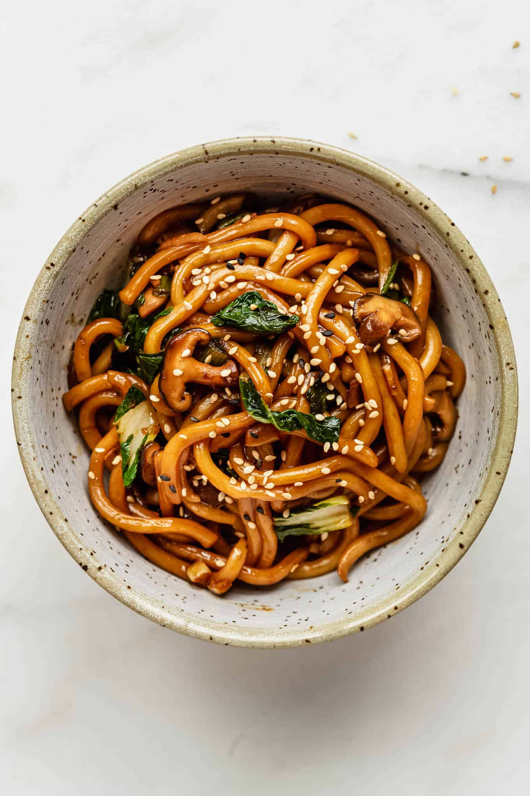

Udon Noodle

Yummy Dish
1 onion, thickly sliced
¼ head white cabbage, roughly sliced
10 shiitake mushrooms
4 spring onions, finely sliced)
-
Boil some water in a large saucepan. Add 250ml cold water and the udon noodles. (As they are so thick,
adding cold water helps them to cook a little bit slower so the middle cooks through). If using frozen or
fresh noodles, cook for 2 mins or until al dente; dried will take longer, about 5-6 mins. Drain and leave in
the colander.